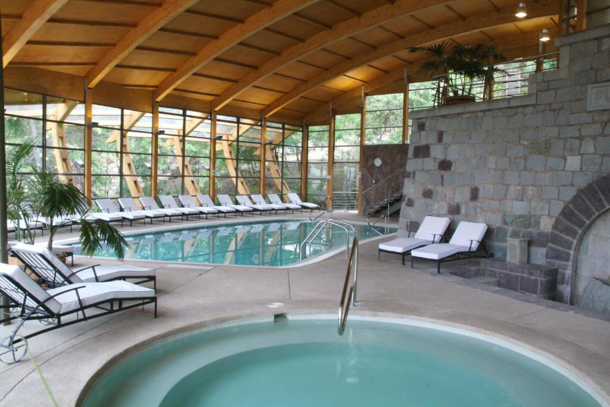
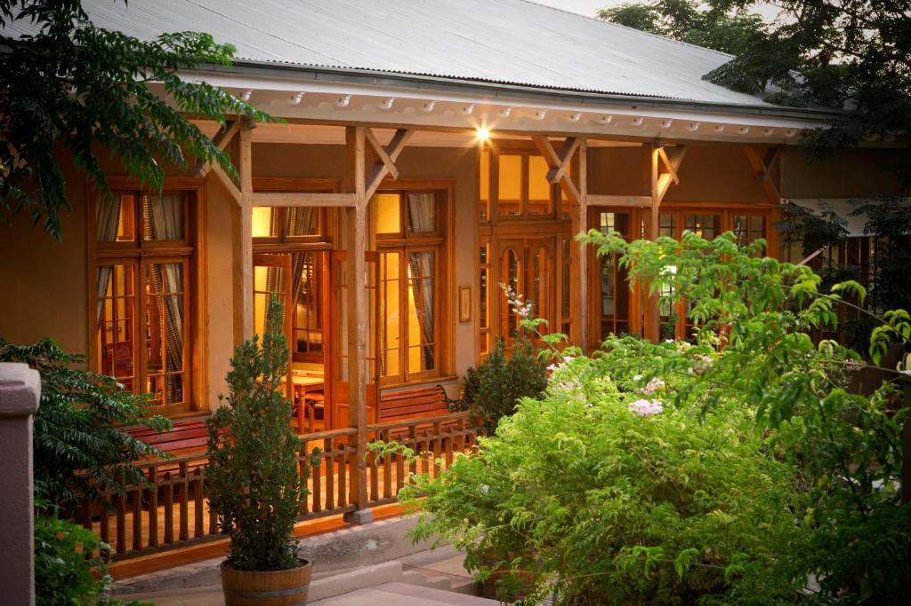
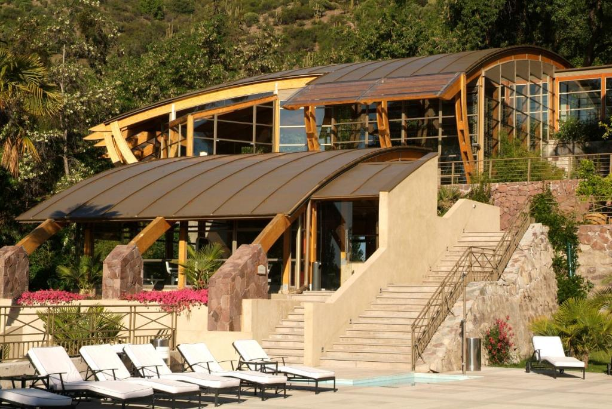
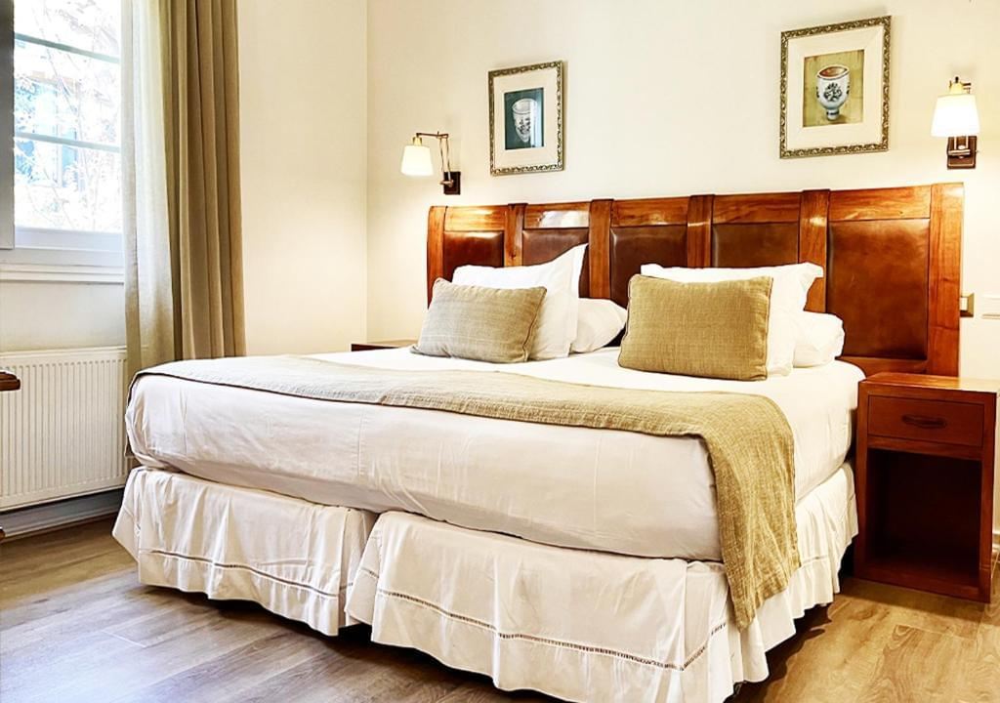
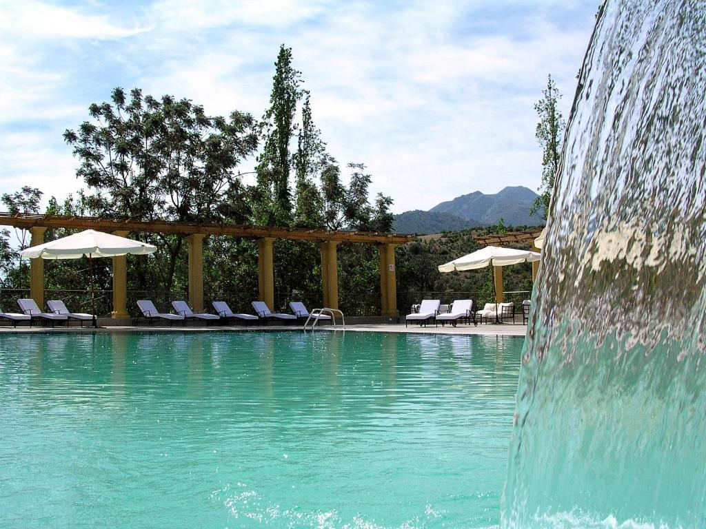
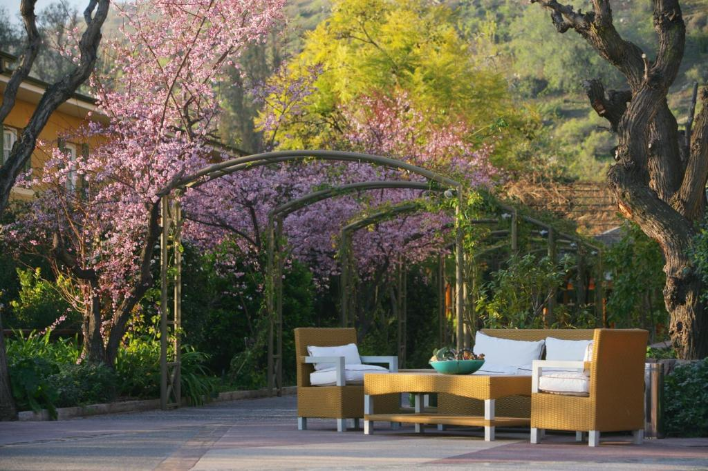
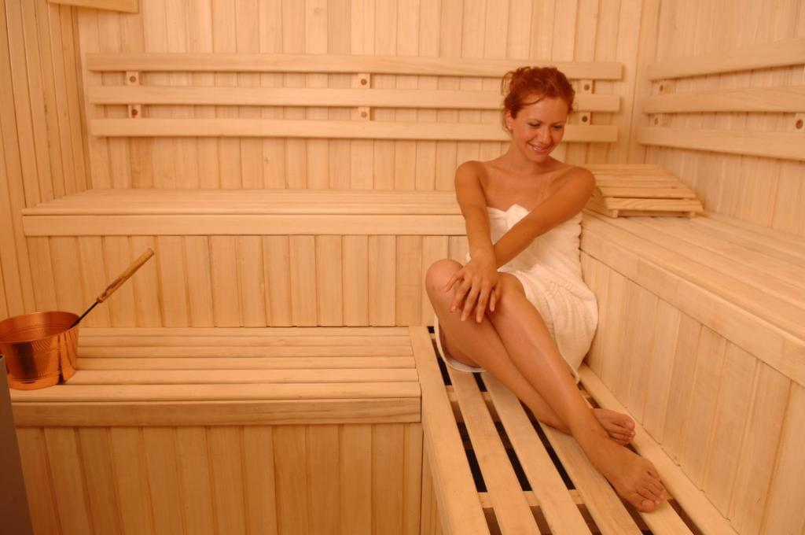
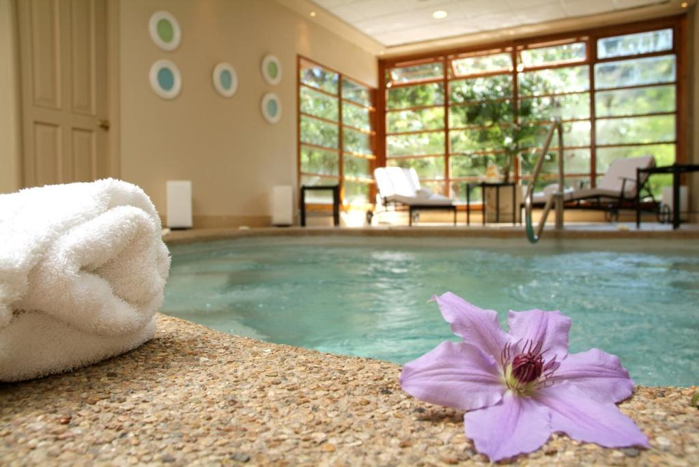
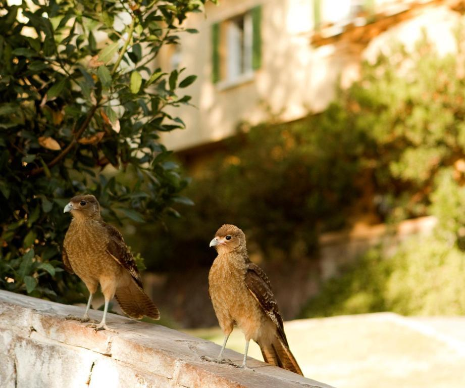
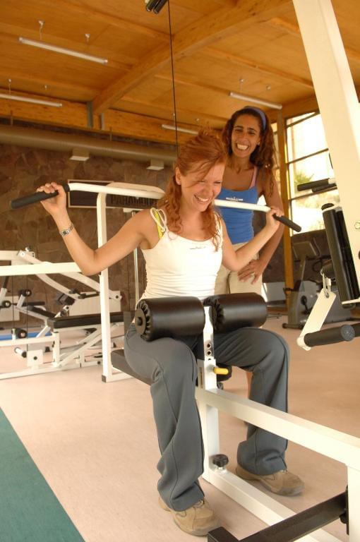

Nuestros juegos están destinados a un público ADULTO mayor de 18 años. Haz clic en Aceptado para confirmar tu edad.
Termas de Jahuel Hotel & Spa
Sobre nosotros
Termas de Jahuel Hotel & Spa es un acogedor y lujoso hotel situado en el pintoresco Valle de Jahuel, Chile. Este hotel ofrece a sus huéspedes la oportunidad única de disfrutar de las aguas termales naturales, relajarse en el centro de spa y disfrutar de las hermosas vistas de los alrededores.
Termas de Jahuel Hotel & Spa es el destino perfecto para quienes buscan una combinación de lujo, belleza natural y la oportunidad de relajarse y rejuvenecer. Este hotel ofrece un sinfín de instalaciones y entretenimiento para los huéspedes, haciendo que su estancia sea inolvidable.
El Hotel Termas de Jahuel es famoso por sus aguas termales, consideradas terapéuticas por sus propiedades minerales. Los huéspedes pueden sumergirse en las piscinas termales y disfrutar de una experiencia relajante y revitalizante.






Spa y cuidado corporal

El hotel ofrece una variedad de tratamientos y masajes en su centro de spa, donde los huéspedes pueden relajarse y disfrutar del cuidado corporal. Es el lugar perfecto para quienes buscan un bienestar total.

Termas de Jahuel ofrece habitaciones y suites de lujo con un diseño y unas instalaciones modernas. Cada habitación cuenta con mobiliario confortable, baño privado y vistas a la naturaleza circundante.

Los alrededores ofrecen muchas actividades al aire libre, como senderismo, ciclismo y equitación. Los huéspedes pueden explorar el hermoso paisaje natural.
Descanso

Termas de Jahuel Hotel & Spa ofrece un lugar tranquilo y apartado para relajarse y desconectar. Los huéspedes pueden disfrutar de la belleza natural del Valle de Jahuel y desconectar de la vida cotidiana.
El hotel está cerca de las famosas regiones vinícolas de Chile, lo que lo convierte en un destino ideal para los amantes del vino. Los huéspedes pueden organizar catas de vino y explorar la riqueza de los caldos locales.